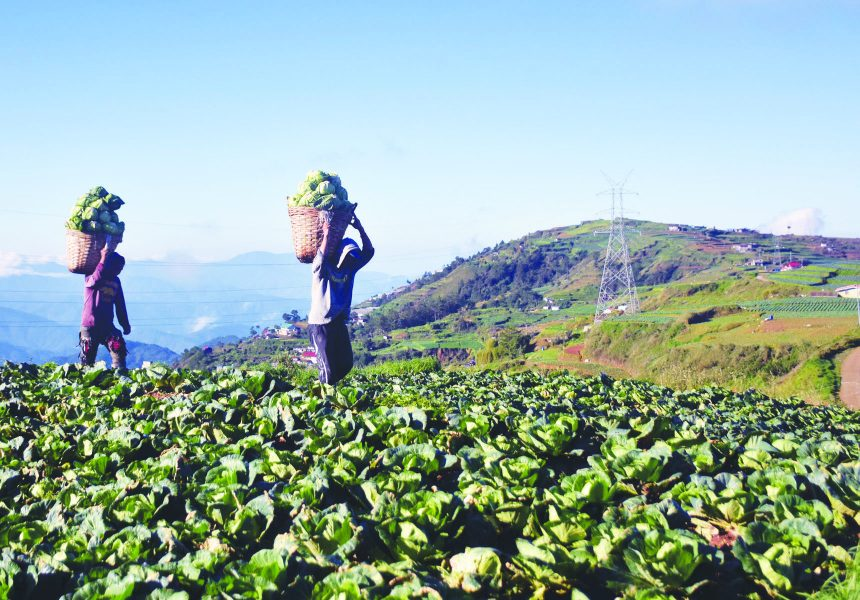

Explore the rich history, culture, and traditions of the Ibaloi Indigenous People.
Welcome to the Ibaloi Indigenous People Documentation
The Ibaloi people have a rich history rooted in mythology and ancestral traditions. According to Ibaloi mythology, their origin is traced back to a couple in Mt. Pulog who survived a great flood sent by Kabunian to punish the wicked people. This couple's descendants multiplied and descended to the fertile valleys of Benguet, becoming the ancestors of the present-day Ibalois.
The Ibaloi or Nabaloi is an indigenous ethnic group found in the northern Philippines. The Ibalois occupy the southeastern two-thirds of Benguet, particularly the municipalities of Kabayan, Bokod, Sablan, Tublay, La Trinidad, Tuba and Itogon, and the southern portions of Kapangan and Atok (CSG 2003). Called Ipaway by the Kalanguyas, the name is derived from those who live in the grasslands, with paway as the Kalanguya term for grassland.
One of the unique practices of the Ibaloi people is their tradition of mummification, especially among affluent families. The process involves a complex series of rituals and preparations to preserve a loved one's body after death, reflecting their deep reverence for ancestors and continuity of lineage.
The Ibaloi people inhabit a mountainous and rocky environment in Benguet, Philippines. Despite the challenging terrain, they have developed sustainable ways of living that are deeply connected to their natural surroundings.
Primarily agrarian, the Ibaloi excel in terracing mountain slopes for rice cultivation, a practice that dates back generations. Their expertise in agricultural engineering allows them to maximize limited arable land and ensure food security for their communities.
In addition to farming, the Ibaloi engage in other livelihood activities such as livestock raising, hunting, fishing, and mining. These diverse economic pursuits reflect their adaptability and resilience in the face of changing environmental and socio-economic conditions.
The traditional governance structure of the Ibaloi people is characterized by a system of councils and customary laws that promote community cohesion and equitable decision-making.
Historically, the affluent class, known as baknang, exerted influence over the less privileged members of society, referred to as abitug. However, the governance system also includes checks and balances to prevent the abuse of power.
Each village has a council, or tongtong, composed of baknang and wise men, who collectively make decisions guided by customary laws. These laws govern various aspects of life, including marriage, property, inheritance, and justice, ensuring the equitable resolution of disputes and conflicts.
Land holds immense significance for the Ibaloi people, serving as the foundation of their cultural identity and livelihood. However, they face ongoing challenges related to land rights and resource management.
Urbanization and modern development pose threats to the ancestral lands of the Ibaloi, leading to conflicts over land ownership and access. The encroachment of infrastructure projects and commercial activities further exacerbates these tensions, endangering the sustainability of traditional practices and ecosystems.
The Ibaloi community is actively involved in advocating for their land rights and implementing sustainable resource management practices. Efforts to strengthen indigenous land tenure systems and promote community-led conservation initiatives are essential for safeguarding the rights and well-being of the Ibaloi people.
Read more: Igorotage
Language: The Ibaloi language, derived from the Kalanguya language, reflects the cultural heritage and geographic context of the Ibaloi people. It serves as a medium of communication and cultural expression, embodying the shared history and values of the community.
Food: Ibaloi cuisine is diverse and reflects their agrarian lifestyle and culinary traditions. Staple foods include rice, root crops, and vegetables, which are cultivated through terracing and sustainable farming practices. Traditional dishes like pinikpikan (chicken soup), etag (smoked pork), and tinawon rice (heirloom rice) are enjoyed during festive occasions and gatherings.
Tapey
pinikpikan
etag
Livelihood: The Ibaloi people engage in various livelihood activities, including agriculture, livestock raising, hunting, fishing, and mining. These occupations are integral to their economic survival and cultural identity, providing opportunities for self-sufficiency and community development.
Cultural Attire: Traditional Ibaloi attire reflects their connection to nature and practicality. Woven garments made from pineapple fibers or cotton are adorned with intricate patterns and symbols, showcasing their craftsmanship and aesthetic sensibilities. These garments are worn during cultural festivals, rituals, and ceremonies, symbolizing cultural pride and identity.
Cultural Dances: Ibaloi cultural dances are a vibrant expression of their cultural heritage and spiritual beliefs. These dances, such as Tayaw (courtship dance), Salip (harvest dance), and Bendian (circle dance), symbolize unity, gratitude, and reverence for nature. Accompanied by traditional music and instruments, these dances play a central role in community celebrations and rituals, fostering social cohesion and intergenerational transmission of cultural knowledge.
The integration of modern technology with Indigenous Peoples has the potential to empower communities and promote sustainable development.
Access to technology can enhance education, healthcare, and economic opportunities for Indigenous Peoples, bridging gaps in infrastructure and service delivery. Digital platforms and communication tools enable remote learning, telemedicine, and e-commerce, empowering communities to access information and services that were previously inaccessible.
However, the integration of technology must be approached with sensitivity to cultural values, traditional knowledge, and community needs. It is essential to involve Indigenous Peoples in the design, implementation, and governance of technology initiatives, ensuring that they align with local priorities and aspirations.
Furthermore, technology can play a crucial role in preserving Indigenous languages, knowledge systems, and cultural practices. Digital archives, language revitalization apps, and multimedia platforms enable communities to document and transmit their cultural heritage to future generations, safeguarding their identity and heritage.
This holistic approach to technology integration promotes inclusivity, equity, and sustainability, fostering collaboration between Indigenous Peoples, governments, and technology partners.
Watch From Our blogger: